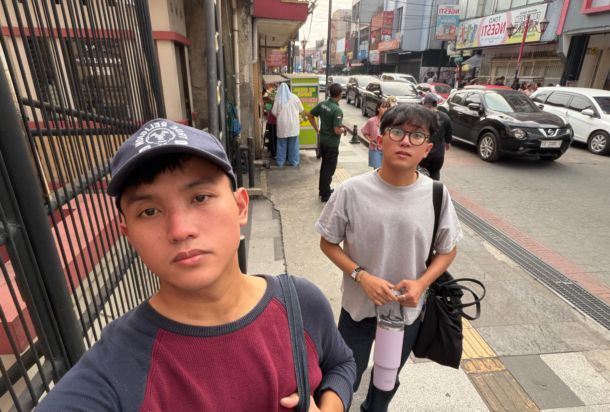
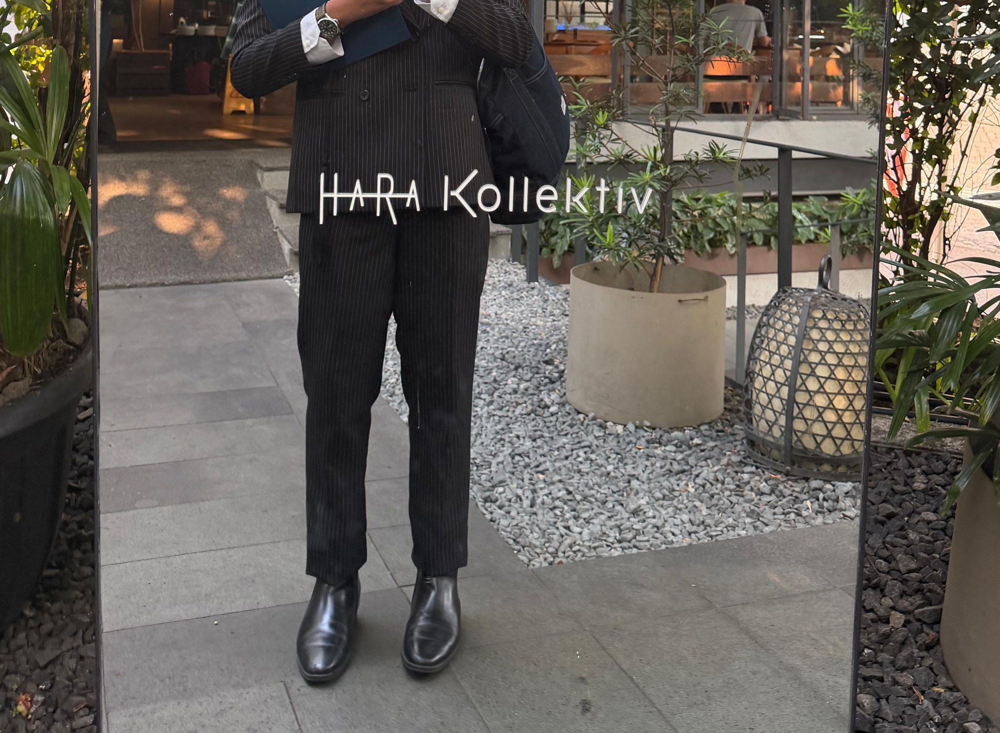

Life in Bits & Atoms
moments.photo

The Thinking Loop: Systems Decision Tree
prd_flowchart.viewThe Soundroom: Music & Playlists
spotify_curation.audio


Experience: Systems in Production
View In-Depth Log →Powering retail loyalty for hundreds of world-class brands across Indonesia. Replacing fragile manual spreadsheets with automated, verified enterprise software.
When airlines cancel or delay flights, passengers panic and airlines hide behind cryptic fare rules. We turned complex aviation regulation (PM 185/2015) into an automated engine.
Wearing hard hats and steel-toed boots in nickel mining, smelters, and geothermal energy sites across Indonesia.
Selected Innovations
View All Decks →3M PHB Bio-Mask: 100% Biodegradable PPE
Billions of plastic medical masks pollute our oceans and take 450+ years to break down. We engineered a surgical mask made from bacterial biopolymers (PHB) grown on Indonesian sugarcane waste that safely composts in soil in 90 days.
Schneider HotSand: Storing Solar Heat in Sand
Imported lithium batteries are expensive and degrade fast in humid tropical climates. HotSand stores excess daytime solar energy in superheated local silica sand beds to provide hot water, crop drying, and clean power overnight.
The Physical Atelier: Canvas & Pigment
acrylic_on_linen.artWhy I Paint: Atoms Cannot Be Undone With a Git Commit
The textured dark red canvas below is my original physical acrylic and oil painting on Belgian linen. In digital software, if you make a mistake, you can hit Ctrl+Z or roll back a server commit. In physical painting, every sweep of the palette knife leaves real texture on the fabric that cannot be erased.
This physical discipline shapes how I build systems: measure twice, respect the natural constraints of the real world, and craft with intention.

Architectural Essays
View All Essays →How I Designed the MAPCLUB Product Operating System: Beyond LLM Slop to Verified Enterprise Blueprints
Why generic LLM prompt engineering produces fragile hallucinations in enterprise software—and how we architected a multi-agent, schema-verified product engineering workspace (C:\work\mapclub-po-workspace) with strict MoSCoW bounds, soft API contracts, and automated BAC sign-off pipelines.